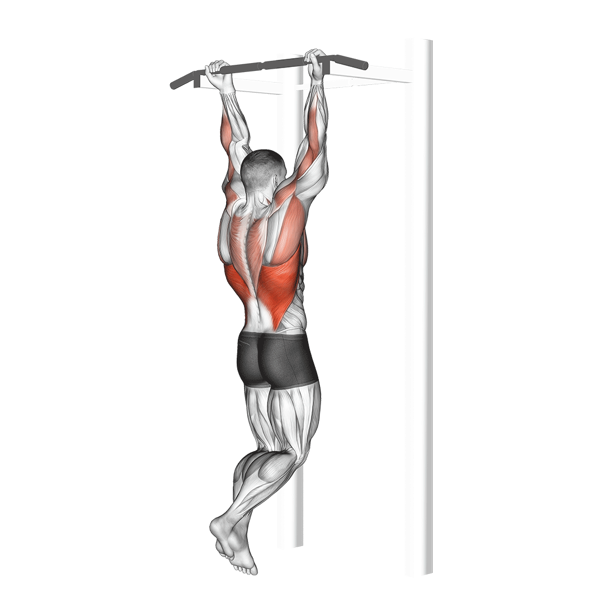

As is evident here, a gym diet plan for muscle gain should include foods high in protein and calories. A high-protein diet is essential for building muscle, so it’s important to include plenty of protein-rich foods. It’s also important to eat plenty of healthy carbs and fats. These nutrients are essential for providing energy and helping your body to recover from workouts. Oatmeal with fresh fruits, nuts,and smoothies made using yogurt can provide you with the right carbs. In addition to eating the right foods, it’s also important to drink plenty of water. Water helps to keep your body hydrated and aids in the process of muscle building. Aim to drink eight glasses of water per day. Finally, make sure you’re getting enough sleep. Sleep is when your body repairs itself and grows muscle tissue. Aim for eight hours of sleep per night.
Workout
There is no one who loves pain, who seeks after it, wants to have it simply because it is pain.
1.Deadlift
1. Activate your hip extensors
2. Reduce lower back pain
3. Improve jump performance
4. Improve bone mineral density
5. Activate your core
6. Boost your metabolism
7. Carry less risk during failed repetitions
8. Offer simplicity of equipment
2.Back squat
1.Improve lower back strength
2.Increase lower body power
3.Build a strong core/torso (due to stabilization of weight)
4.Sharpen body awareness and coordination
5.Build resiliency in sport and daily life
6.May reduce your risk of injury
7.Improves sprint performance
8.Benefits coordination and flexibility
9.Improves general sports performance
3.Bench Press
1.Increased Upper-Body Strength
2.Predictor of Upper-Body Strength
3.Bigger Pec Major
4.Stronger Pec Minor
5.Shredded Serratus Anterior
6.Iron-Forged Delts
7.Crazy Strong Triceps
8.Improved Bone Health
9.Built for Progress
4.Dumbbell romanian deadlift
1. Activate your hip extensors
2. Reduce lower back pain
3. Improve jump performance
4. Improve bone mineral density
5. Activate your core
6. Boost your metabolism
7. Carry less risk during failed repetitions
8. Offer simplicity of equipment
5.Kettlebell swing
1.Strengthening of joints
2.Reinforcement of musculoskeletal tissue
3.Improvement of the circulatory system
4.Development of the strength of the posterior chain muscles, including the hamstrings, gluteus, lower back, and adductors
5.Strengthening of the core and reduction of the risk of lower back and hamstring injuries
6.Improvement of athleticism, running, sprinting, muscle balance, and hip hinge and drive
7.Increase in muscle mass, muscular strength, and development of power through the hips
8.Increase in hip and hamstring flexibility
6.Suspended pushup
1.Engages multiple muscle groups including chest, shoulders, triceps, and core
2.Improves upper body strength and stability
3.Increases core strength and stability
4.Challenges balance and coordination
5.Can be modified to increase or decrease difficulty
6.Requires minimal equipment and can be done anywhere with suspension straps

7.Pullup
1.Work Many Muscles at a Time
2. Good for Grip Strength
3.Calorie Burner
4. Helps in Cardio Workout
5.Improves Mental Health
6.Improve Joint Fluidity and Bone Health
8. Improves Posture and Gives you a “V-Shape”
8.Medicine ball slam
1.increased muscle density
2.higher resting metabolism
3.faster glucose metabolism
4.increased athletic performance
5.higher aerobic capacity
6.stronger maximum muscle limits
7.enhanced mental clarity
8.improved heart health
9.lower body fat
9.Wheel rolling
1.Increasing overall stamina
2.Preventing diseases
3.Helping shed extra weight
4.Strengthening muscles to reduce the chances of injury
5.Improving body balance and coordination
6.Providing a full body workout